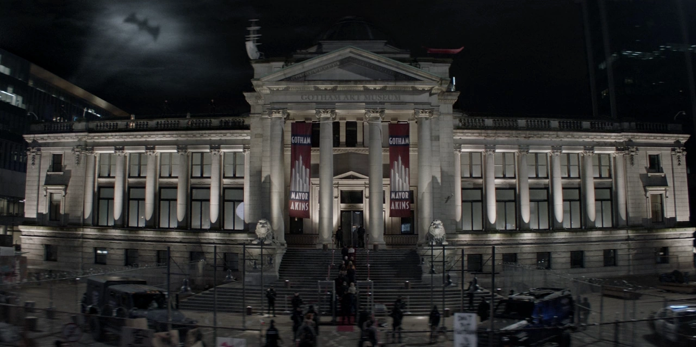

Museu de Gotham City
Venha conhecer a história e os heróis que marcaram a cidade. O Museu de Gotham é um dos maiores centros culturais da região, repleto de artefatos, pinturas e relíquias da história local.

Projetos Sociais
Heróis na Comunidade
Projeto de voluntariado que promove a integração entre jovens e a segurança da cidade.

Educação para Todos
Iniciativa da prefeitura para oferecer aulas gratuitas de reforço escolar em bairros carentes.
Verde Gotham
Campanha de preservação ambiental e plantio de árvores nos parques da cidade.